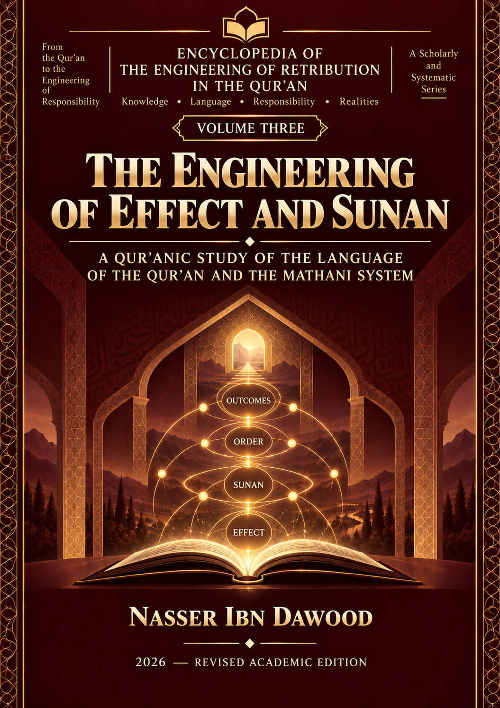

Nasser Ibn Dawood
Text extracted from the author-supplied Word edition; consult the original source.
Preparing the reader…
Based on the conceptual framework of the document "Volume 3: Encyclopedia of the Engineering of Recompense in the Quran - The Engineering of Impact and Divine Laws (Sunan)," here is an expanded, comprehensive English translation and analytical breakdown of its core themes.
This volume offers a profound structural study of the concepts of "Impact" (Athar) and "Divine Laws" (Sunan) in the Quran, moving far beyond simplistic, deterministic views of cause and effect. It seeks to deconstruct prevailing interpretations and reconstruct them strictly according to the Quranic paradigm.
Here is the expanded breakdown of its major axes:
1. Deconstructing Simple Causality & Precise Semantic Differentiation
Correlation is Not Causation: The text vehemently argues that mere sequence, variation, or the temporal pairing of two events does not establish a definitive cause-and-effect relationship or a universal law.
Granular Terminology: It draws strict linguistic and conceptual boundaries between four distinct Quranic terms that are often mistakenly conflated:
Action (Fi'l): The initial deed committed.
Impact/Trace (Athar): The immediate or lingering footprint of that action. Not every action leaves the same type of impact.
Ultimate Consequence (Aaqibah): The eventual outcome. Not every immediate impact dictates the final consequence.
Recompense/Retribution (Jazaa): The deliberate divine reward or punishment. A consequence is not always an active form of divine recompense.
2. Reconceiving "Sunan" (Divine Laws) Beyond Mechanical Physics
Rejecting Material Equivalence: The book completely rejects the idea of equating the Quranic concept of Sunnah (the way of Allah) with rigid scientific, physical, or mathematical laws.
The Illusion of Immediacy: While the Quran asserts that Allah’s Sunan are constant ("You will find no change in the Sunnah of Allah"), this immutability does not mean consequences are immediate or mechanical.
Misinterpreting Prosperity: The delay of a consequence does not imply divine pardon or systemic failure. Furthermore, extended periods of material prosperity or prolonged power do not serve as indicators of divine pleasure or approval.
3. Relational Equations & the "Engineering of Time"
Conditional Matrices: The research introduces the concept of "Quranic Relational Equations." For instance, the Quranic principle that "Allah will not change the condition of a people until they change what is in themselves" is presented as a necessary condition rather than a solitary, sufficient cause that guarantees a mechanical result.
Time as an Independent Variable: Time is treated as an autonomous, engineered layer in the divine system that prevents humans from making simplistic assumptions. The book carefully unpacks the chronological tools of divine governance:
Respite (Imla'): Granting time and resources despite transgression.
Gradual Ruin (Istidraj): Allowing individuals or nations to incrementally approach their downfall while thinking they are succeeding.
The Appointed Term (Ajal): The fixed, unalterable deadline for an event, known only to God.
Delay (Ta'kheer): The intentional postponement of outcomes for a divine wisdom.
4. Critiquing Historical Determinism and "Accumulation"
The Fallacy of Repetition: The text clarifies that the mere "repetition" of an event does not automatically equate to "accumulation," and an increase in quantity does not inevitably lead to a qualitative shift.
Reading History Backward: This principle dismantles the common historical approach of looking at the fall or rise of nations retrospectively to diagnose a single, inevitable worldly cause. Nations possessing massive power and leaving monumental "impacts" (Athaar) on earth are not granted immunity from divine laws.
5. The Monotheistic Canopy & Divine Governance (Tadbeer)
Absolute Sovereignty: All of these relationships, laws, and impacts operate under the supreme umbrella of "Divine Management" (Al-Tadbeer Al-Ilahi) and the absolute doctrine of Monotheism (Tawhid).
Transcendence (Tanzih): The book enforces the theological rule that "There is nothing like unto Him." Therefore, the Creator, His actions, and His divine system cannot be restricted, boxed into, or equated with any human law, predictable physical model, or material framework.
Ultimate Conceptual Summary
The core message of this volume is a stark warning against judging historical or contemporary events by their superficial outward appearances. It challenges the reader to stop reading history from its end-point to fabricate single worldly causes.
In the Quranic worldview, material success is not proof of divine favor, hardship is not necessarily a sign of wrath, and immense worldly power offers no ultimate immunity. The text demands a highly nuanced reading of the "engineering of relationships" in the Quran—distinguishing between an immediate footprint (Athar) and the ultimate destiny (Ma'al)—without inventing deterministic laws and falsely attributing them to the Divine text.